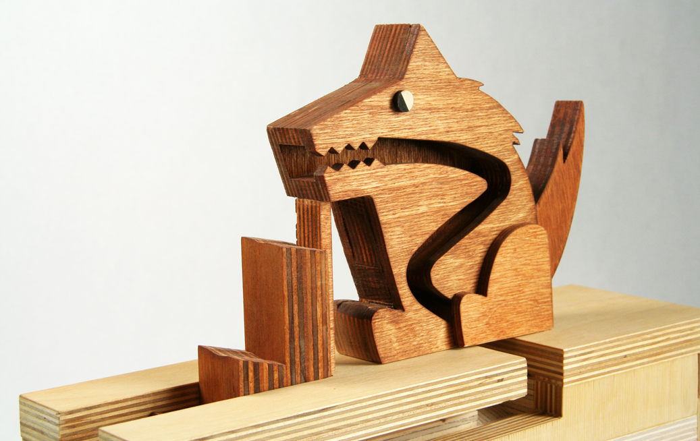
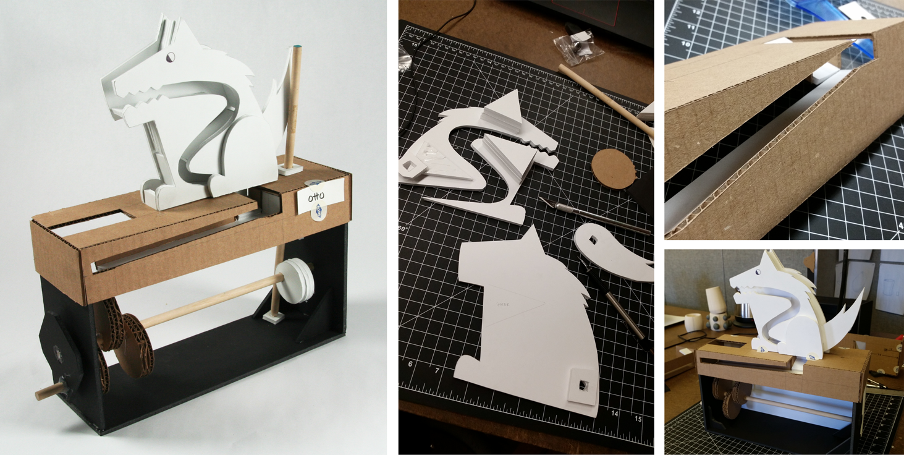
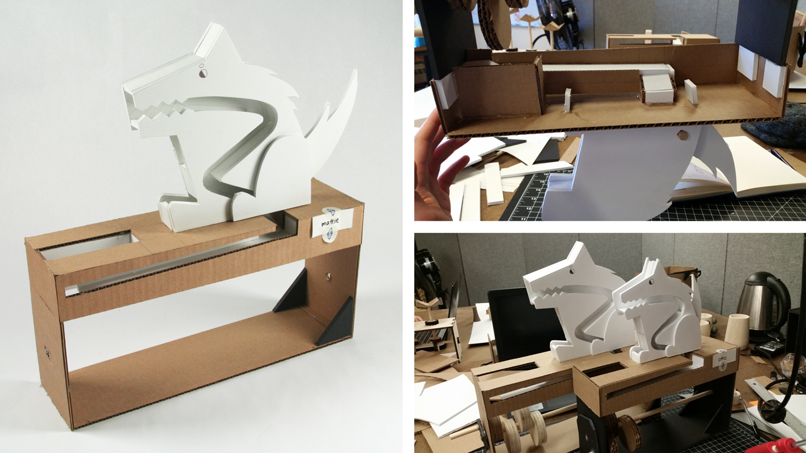
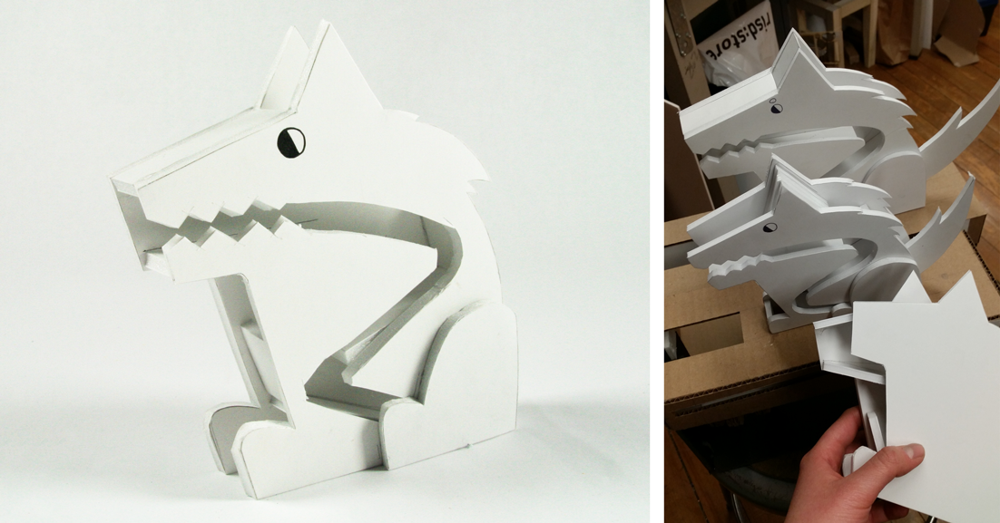
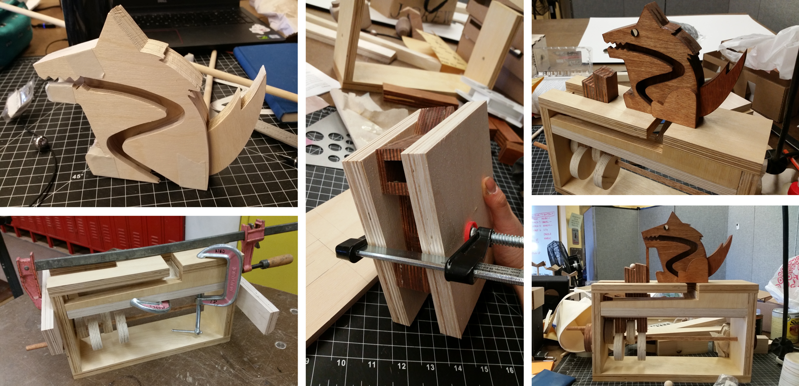
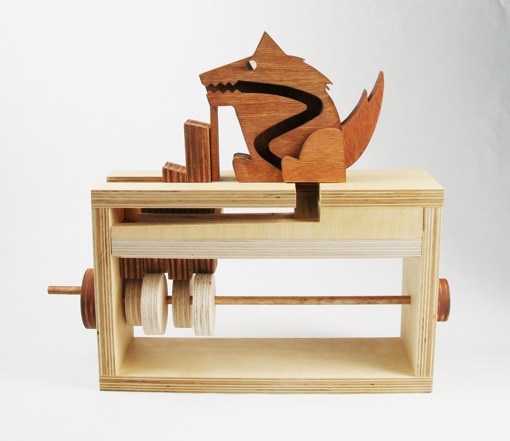
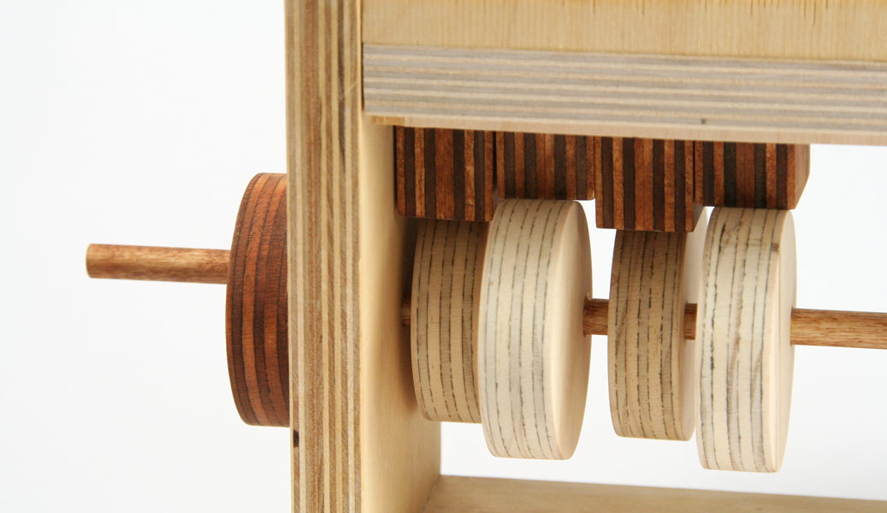

hand-powered wooden dog toy that eats its own poop
This project was created for a 2.5 week assignment to design a hand-powered toy. Going into this project, I knew that I wanted to incorporate an element of humor, and thus developed the concept of a dog eternally eating its own poop.

The mechanism for the dog is quite straightforward. It consists of a set of alternating stair steps and a series of ramps to get a marble to pass through the digestive system of a dog and return it to its mouth.

The first of the dogs to be created was Otto. Otto's mouth measured 4" from the top of the bearing box- too short for the stairs I had made. Initially, I wanted his tail to wag up and down as the operator cranked the toy's handle, but with the short time frame and ensuing frustration with the stair mechanism, I scrapped the idea.

Mattie, the largest of the dogs, came next. She was built because I thought that if I increased the size of the dog and the bearing box, the stairs that I had made would be an appropriate height for her. I was wrong.

Chip, the roughest and smallest of the foamcore models, was made haphazardly in a last-ditch attempt to figure out the appropriate height dog to fit the stair mechanism. Surprisingly, he seemed perfect for the initial bearing box, which made me feel simultaneously like a genius and an idiot.

The final model, Axle, was constructed entirely in birch plywood so that the striped edges could be used to add a whimsical pattern. While the bearing box was cut using a table saw, the dog himself was made using a bandsaw. After cutting, the wooden pieces were stained in two shades and glued together.

